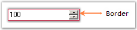
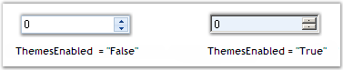
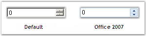
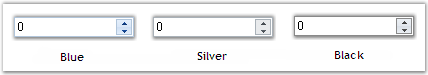

The various Values of the NumericUpDownExt control and their settings are given below.
|
NumericUpDownExt Properties |
Description |
|
Value |
Gets / sets the value assigned to the spin box (also known as an up-down control). |
|
Hexadecimal |
Gets / sets the value indicating whether the spin box (also known as an up-down control) should display the value it contains in hexadecimal format. |
|
HexValue |
Gets the value in hexadecimal numeration. |
|
Minimum |
Gets / sets the minimum allowed value for the spin box (also known as an up-down control). |
|
Increment |
Gets / sets the value to increment or decrement the spin box (also known as an up-down control) when the up or down buttons are clicked. The default value is set to '1'. |
|
[C#]
this.numericUpDownExt1.Value = new decimal(new int[] {25, 0, 0, 0}); this.numericUpDownExt1.Hexadecimal = true; this.numericUpDownExt1.Minimum = new decimal(new int[] {50, 0, 0, 0}); this.numericUpDownExt1.Increment = new decimal(new int[] {5, 0, 0, 0}); |
|
[VB.NET]
Me.numericUpDownExt1.Value = New Decimal(New Integer() {25, 0, 0, 0}) Me.numericUpDownExt1.Hexadecimal = True Me.numericUpDownExt1.Minimum = New Decimal(New Integer() {50, 0, 0, 0}) Me.numericUpDownExt1.Increment = New Decimal(New Integer() {5, 0, 0, 0}) |
The methods associated with the above properties are given below.
|
Methods |
Description |
|
DownButton |
Decrements the value of the spin box (also known as an up-down control). |
|
UpButton |
Increments the value of the spin box (also known as an up-down control). |
This section discusses the Display settings of the NumericUpDownExt control.
The NumericUpDownExt provides the following properties to set the display characteristics associated with the integer value.
|
NumericUpDownExt Properties |
Description |
|
DecimalPlaces |
Gets / sets the number of decimal places to display in the spin box (also known as an up-down control). |
|
ThousandsSeparator |
Gets / sets a value indicating whether a thousand separator is displayed in the spin box (also known as an up-down control) when appropriate. |
|
[C#]
this.numericUpDownExt1.DecimalPlaces = 2; this.numericUpDownExt1.ThousandsSeparator = true; |
|
[VB.NET]
Me.numericUpDownExt1.DecimalPlaces = 2 Me.numericUpDownExt1.ThousandsSeparator = True |
Figure 550: Decimal Places set for NumericUpDownExt Value
3.3.8.9.3.3.1 Background Settings
The Background settings of the NumericUpDownExt control are discussed below.
Background Color
The background color of the control can be set using the properties given below.
|
NumericUpDownExt Property |
Description |
|
BackColor |
Specifies the background color of the component. |
|
[C#]
this.numericUpDownExt1.BackColor = System.Drawing.Color.Aquamarine; |
|
[VB.NET]
Me.numericUpDownExt1.BackColor = System.Drawing.Color.Aquamarine |
Figure 551: Background Color set for the NumericUpDownExt Control
3.3.8.9.3.3.2 Foreground Settings
The foreground settings of the NumericUpDownExt control are discussed below.
Foreground Color
The foreground color of the control can be set using the properties given below.
|
NumericUpDownExt Property |
Description |
|
ForeColor |
Gets / sets the foreground color of the spin box (also known as an up-down control). |
|
[C#]
this.numericUpDownExt1.ForeColor = System.Drawing.Color.DodgerBlue; |
|
[VB.NET]
Me.numericUpDownExt1.ForeColor = System.Drawing.Color.DodgerBlue |
Figure 552: Foreground Color set for the NumericUpDownExt Control
3.3.8.9.3.3.2.1 Applying Foreground Color to Negative Values
It is a good behavior in a NumericUpDownExt control to indicate negative values using a separate color. The IntegerTextBox and DoubleTextBox controls also exhibit the same behavior.
Figure 553: Derived NumericUpdownExt showing Negative Values in Different Color
To add this feature to the NumericUpdown control, we need to derive the control. For this, we need to include the below given code snippet in the derived class.
|
[C#]
class NumericupdownextDerived : NumericUpDownExt { private IntegerTextBox itb = new IntegerTextBox(); public integerupdown() { // Constructor of the new class. foreach(Control c in Controls) { if(c is TextBox ) { itb.Location=c.Location; itb.Size = c.Size; itb.Dock = c.Dock; itb.Anchor = c.Anchor; Controls.Add(itb); itb.BringToFront(); itb.TextChanged += new EventHandler(itb_TextChanged); } } }
private void itb_TextChanged(object sender,EventArgs e) { // Assigns the IntegerValue. Value = itb.IntegerValue; }
public System.Drawing.Color NegativeColor { get { return itb.NegativeColor; } set { itb.NegativeColor = value; } }
protected override void OnValueChanged(EventArgs e) { itb.Text = Value.ToString(); } } |
|
[VB.NET]
Class NumericupdownextDerived Inherits NumericUpDownExt Private itb As IntegerTextBox = New IntegerTextBox
Public Sub New() For Each c As Control In Controls If TypeOf c Is TextBox Then itb.Location = c.Location itb.Size = c.Size itb.Dock = c.Dock itb.Anchor = c.Anchor Controls.Add(itb) itb.BringToFront AddHandler itb.TextChanged, AddressOf itb_TextChanged End If Next End Sub
Private Sub itb_TextChanged(ByVal sender As Object, ByVal e As EventArgs) ' Assigns the IntegerValue. Value = itb.IntegerValue End Sub
Public Property NegativeColor() As System.Drawing.Color Get Return itb.NegativeColor End Get Set itb.NegativeColor = value End Set End Property
Protected Overloads Overrides Sub OnValueChanged(ByVal e As EventArgs) itb.Text = Value.ToString End Sub End Class |
After deriving the new class, create an object for that class and set the required properties.
|
[C#]
NumericupdownextDerived ud = new NumericupdownextDerived(); ud.Location = new Point(200, 200); ud.Minimum = -100; ud.NegativeColor = Color.Red; Controls.Add(ud); |
|
[VB.NET]
Dim ud As NumericupdownextDerived = New NumericupdownextDerived ud.Location = New Point(200, 200) ud.Minimum = -100 ud.NegativeColor = Color.Red Controls.Add(ud) |
The behavior settings of the NumericUpDownExt control are discussed below.
Intercept Arrow Keys
The arrow keys can be used to select values using the below given property.
|
NumericUpDownExt Property |
Description |
|
InterceptArrowKeys |
Gets / sets a value indicating whether the user can use the UP and DOWN ARROW keys to select values. |
|
[C#]
this.numericUpDownExt1.InterceptArrowKeys = true; |
|
[VB]
Me.numericUpDownExt1.InterceptArrowKeys = True |
MaxLength
The maximum length of the text can be set using the property given below.
|
NumericUpDownExt Property |
Description |
|
MaxLength |
Gets / sets the maximum length of the text that can be entered into the editable portion of the control. The default value is set to '32767'. |
|
[C#]
this.numericUpDownExt1.MaxLength = 32800; |
|
[VB]
Me.numericUpDownExt1.MaxLength = 32800 |
ReadOnly
The ReadOnly mode can be enabled for the NumericUpDownExt control using the below given property.
|
NumericUpDownExt Property |
Description |
|
ReadOnly |
Gets / sets a value indicating whether the text can be changed by the use of the up or down buttons only. |
|
[C#]
this.numericUpDownExt1.ReadOnly = true; |
|
[VB]
Me.numericUpDownExt1.ReadOnly = True |
This section discusses the Alignment settings of the NumericUpDownExt control.
Text Alignment
The text of the NumericUpDownExt control can be aligned using the below given property.
|
NumericUpDownExt Property |
Description |
|
TextAlign |
Gets / sets the alignment of the text in the spin box (also known as an up-down control).
It includes the below given options:
Left Right and Center. |
|
[C#]
this.numericUpDownExt1.TextAlign = System.Windows.Forms.HorizontalAlignment.Center; |
|
[VB]
Me.numericUpDownExt1.TextAlign = System.Windows.Forms.HorizontalAlignment.Center |
Figure 554: Text Aligned to the "Center"
UpDownAlign
The alignment of the up and down buttons can be set using the property given below.
|
NumericUpDownExt Property |
Description |
|
UpDownAlign |
Gets / sets the alignment of the up and down buttons. The default value is set to 'Right'.
It includes the below given options.
Left and Right. |
|
[C#]
this.numericUpDownExt1.UpDownAlign = System.Windows.Forms.LeftRightAlignment.Left; |
|
[VB]
Me.numericUpDownExt1.UpDownAlign = System.Windows.Forms.LeftRightAlignment.Left |
This section discusses the Border Settings of the NumericUpDownExt control.
Color and Styles can be applied to the border of the NumericUpDownExt control as discussed below.
|
NumericUpDownExt Properties |
Description |
|
Border3DStyle |
Indicates the style of the 3D border. The options included are as follows:
RaisedOuter, SunkenOuter, RaisedInner, SunkenInner, Raised, Etched, Bump, Sunken, Adjust and Flat.
The default value is set to 'Sunken'. |
|
BorderColor |
Specifies the color of the 2D border. |
|
BorderSides |
Indicates the border sides of the panel. The options included are as follows:
Left, Top, Right, Bottom, Middle and All. |
|
BorderStyle |
Indicates whether the edit control should have a border. The options included are given below:
FixedSingle, Fixed3D and None. |
|
[C#]
this.numericUpDownExt1.Border3DStyle = System.Windows.Forms.Border3DStyle.Etched; this.numericUpDownExt1.BorderColor = System.Drawing.Color.Crimson; this.numericUpDownExt1.BorderSides = System.Windows.Forms.Border3DSide.All; this.numericUpDownExt1.BorderStyle = System.Windows.Forms.BorderStyle.FixedSingle; |
|
[VB.NET]
Me.numericUpDownExt1.Border3DStyle = System.Windows.Forms.Border3DStyle.Etched Me.numericUpDownExt1.BorderColor = System.Drawing.Color.Crimson Me.numericUpDownExt1.BorderSides = System.Windows.Forms.Border3DSide.All Me.numericUpDownExt1.BorderStyle = System.Windows.Forms.BorderStyle.FixedSingle |

Figure 555: PercentTextBox with Border Set
We can display a themed border around the NumericUpDownExt control. This can be done using the property given below.
|
NumericUpDownExt Property |
Description |
|
ThemedBorder |
Specifies whether or not you want themed border around the control when themes are enabled.
The ThemesEnabled property must be set to 'True'. |
 Note: Refer Themes
and Visual Styles topic to know about
the ThemesEnabled property.
Note: Refer Themes
and Visual Styles topic to know about
the ThemesEnabled property.
|
[C#]
this.numericUpDownExt1.ThemedBorder = true; this.numericUpDownExt1.ThemesEnabled = true; |
|
[VB.NET]
Me.numericUpDownExt1.ThemedBorder = True Me.numericUpDownExt1.ThemesEnabled = True |
Figure 556: Themed Border of NumericUpDownExt Control
A sample which demonstrates the Border Settings of NumericUpDownExt control is available in the below sample installation path.
..My Documents\Syncfusion\EssentialStudio\Version Number\Windows\Tools.Windows\Samples\2.0\Editors Package\EditorControls
The layout settings of the NumericUpDownExt control are discussed in this section.
The size of the NumericUpDownExt control can be set according to the needs of the user using the properties discussed below.
|
NumericUpDownExt Properties |
Description |
|
MaximumSize |
Gets / sets the maximum size for the control. |
|
MinimumSize |
Gets / sets the minimum size for the control. |
|
[C#]
this.numericUpDownExt1.MaximumSize = new System.Drawing.Size(60, 50); this.numericUpDownExt1.MinimumSize = new System.Drawing.Size(60, 50); |
|
[VB.NET]
Me.numericUpDownExt1.MaximumSize = New System.Drawing.Size(60, 50) Me.numericUpDownExt1.MinimumSize = New System.Drawing.Size(60, 50) |
Figure 557: Size of the NumericUpDownExt control Set
Sometimes there may occur some situations for entering large values, like in Mega, Kilo etc. In such situations if you add some sort of keyboard support, it will be very much useful for the you.
For example if the you want to enter 22000, you just need to enter 22 and then press 'K'. The value will change to 22000 automatically. This is illustrated in the code snippet given below.
|
[C#]
private void numericUpDownExt1_KeyDown(object sender, KeyEventArgs e) { decimal v = integerTextBox1.Value; switch(e.KeyCode) { // Entering the value as multiples of thousand. case Keys.G : v = v * 1000000000; break; case Keys.M : v = v * 1000000; break; case Keys.K : v = v * 1000; break; } integerTextBox.Value = v; } |
|
[VB.NET]
Private Sub numericUpDownExt1_KeyDown(ByVal sender As Object, ByVal e As KeyEventArgs) Dim v As Decimal = numericUpDownExt1.Value Select e.KeyCode ' Entering the value as multiples of thousand. Case Keys.G v = v * 1000000000 Case Keys.M v = v * 1000000 Case Keys.K v = v * 1000 End Select numericUpDownExt1.Value = v End Sub |
This section discusses themes and visual styles settings of the NumericUpDownExt control.
Themes
Themes define the look and feel of the NumericUpDownExt control. They can be set using the property given below.
|
NumericUpDownExt Property |
Description |
|
ThemesEnabled |
Specifies whether XP Themes (visual styles) should be used for this control when available. |
|
[C#]
this.numericUpDownExt1.ThemesEnabled = true; |
|
[VB]
Me.numericUpDownExt1.ThemesEnabled = True |

Figure 558: Themes set for Office 2007 (Blue) Visual Style
Visual Styles
Visual Styles enhance the appearance of the NumericUpDownExt control and can be set using the property given below.
|
NumericUpDownExt Properties |
Description |
|
VisualStyle |
Specifies the visual style of the NumericUpDownExt control. It includes the options given below.
Default and Office2007. |
|
ColorScheme |
Gets / sets Office2007Theme for Office2007 style. |
|
[C#]
this.numericUpDownExt1.VisualStyle = Syncfusion.Windows.Forms.VisualStyle.Office2007; this.numericUpDownExt1.ColorScheme = Syncfusion.Windows.Forms.Office2007Theme.Blue; |
|
[VB]
Me.numericUpDownExt1.VisualStyle = Syncfusion.Windows.Forms.VisualStyle.Office2007 Me.numericUpDownExt1.ColorScheme = Syncfusion.Windows.Forms.Office2007Theme.Blue |

Figure 559: Visual Styles

Figure 560: Office 2007 Visual Styles
When the ColorScheme property is set to 'Managed', the NumericUpDownExt control can be displayed using custom colors supported by the control.
This can be done programmatically as follows.
|
[C#]
this.numericUpDownExt1.VisualStyle = Syncfusion.Windows.Forms.VisualStyle.Office2007; this.numericUpDownExt1.ColorScheme = Syncfusion.Windows.Forms.Office2007Theme.Managed; Office2007Colors.ApplyManagedColors(this, Color.Orange); |
|
[VB.NET]
Me.numericUpDownExt1.VisualStyle = Syncfusion.Windows.Forms.VisualStyle.Office2007 Me.numericUpDownExt1.ColorScheme = Syncfusion.Windows.Forms.Office2007Theme.Managed; Office2007Colors.ApplyManagedColors(Me, Color.Orange) |
Figure 561: NumericUpDownExt displayed in "Orange"
Note: The ThemesEnabled property
should be set to 'True' for the above settings to take effect.
A sample which demonstrates the ThemesEnabled property and Office 2007 Visual Styles of TextBoxExt control is available in the below sample installation path.
..My Documents\Syncfusion\EssentialStudio\Version Number\Windows\Tools.Windows\Samples\2.0\Editors Package\EditorControls